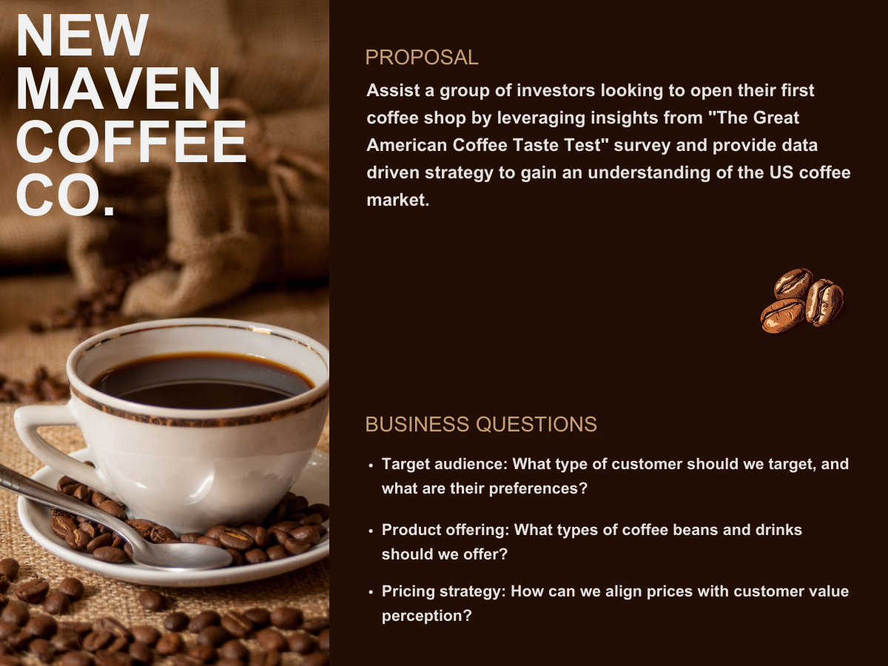

Introduction
Hired as an Analytics Consultant by a group of fictitious investors looking to open their first coffee shop, the New Maven Coffee Co., I leverage insights from "The Great American Coffee Taste Test" survey and provide data driven strategy to gain an understanding of the booming US coffee market.
This comprehensive analysis provides an in-depth understanding of the tastes, preferences, and buying habits of American coffee lovers. With a strategic roadmap in hand, New Maven Coffee Co. will be well-positioned to capitalize on the vast potential of the US coffee market, ensuring their journey begins on a path to success.

To view the full interactive Tableau Dashboard click Here
Business Questions
- Target audience: What type of customer should we target, and what are their preferences?
- Product offering: What types of coffee beans and drinks should we offer?
- Pricing strategy: How can we align prices with customer value perception?
About the Data
Responses to "The Great American Coffee Taste Test" consisting of 4042 survey participants, various questions and a coffee taste test. The data contains 1 table consisting of 11 fields and 4043 records in csv format.
Tools Used
Excel (Data Cleaning)
Tableau (Exploration & Visualization)
Analysis
Survey responses only from participants who typically drink their coffee at cafes were used to identify the "Ideal Customer" and their preferences. This is the type of customer we should target as they are more likely to frequent New Maven Coffee Co.
Insights
Target Audience & Customer Preferences:Most participants feel that they are coffee connoisseurs and drink coffee because they like the taste, need the caffeine or out of ritual.
Although most participants drink coffee at home, when on the go they prefer to get their coffee either at a specialty cafe, a regular cafe or at one of the national coffee chains.
They also tend to drink 1-2 cups of black coffee per day.

Most participants prefer their coffee medium to somewhat strong and brewed from a light to medium roast bean.
The vote for fully caffeinated coffee was almost unanimous.
Coffee D was rated the best tasting coffee and was found by the participants to be more acidic than bitter.

Most participants spend between $20-$60 per month on coffee whether at home or at a cafe.
Most feel that money spent on coffee equipment is money well spent. But were split ~60/40 as to whether it was worth going to a cafe vs making their coffee at home.
Customers have paid between $6-$15 for coffee at a cafe in the past and are comfortable spending that much. Surprisingly, 20% of customers would spend over $20 at a cafe.

Recommendations
- Target the "Ideal Customer" (educated white male 25-34 y/o, works from home full time) who frequents cafes, knows good coffee and considers themselves somewhat of a coffee expert. With that in mind, a specialty cafe will likely do best.
- Offer light to medium roast caffeinated beans, which are more acidic than bitter and have fruity or chocolatey notes.
- The menu should include Pour Over, Latte, Cappuccino, Espresso and Regular drip coffee drinks brewed medium to somewhat strong.
- Offer whole milk, oat milk and half & half as those are most popular.
- Even though most prefer plain granulated sugar, raw sugar, artificial sweeteners and brown sugar should also be offered since most cafes offer them.
- To capture the at home coffee brewer (who may not think that money spent at a cafe is worth it) when they're “on the go” offer something that they can't get at home such as complex specialty drinks, exotic coffee beans and a great atmosphere/experience.
- To capture the at home coffee brewer (who may not think that money spent at a cafe is worth it) when they're “on the go” offer something that they can't get at home such as complex specialty drinks, exotic coffee beans and a great atmosphere/experience.
- Since there was no data provided for flavorings, no recommendations can be given.
- Although the sample size was large at 4042 once filtered for 'participants who typically drink their coffee at a cafe' the sample size shrunk significantly.
- The data contains a significant number of NULL answers which were excluded for the purposes of this analysis.
Data Limitations
Data Source
Maven Analytics Great American Coffee Taste TestContact Me
Location
Miami, Fl
alsinajacks@gmail.com